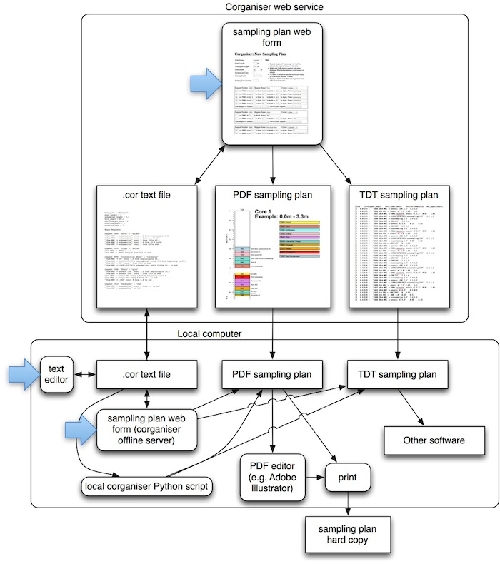
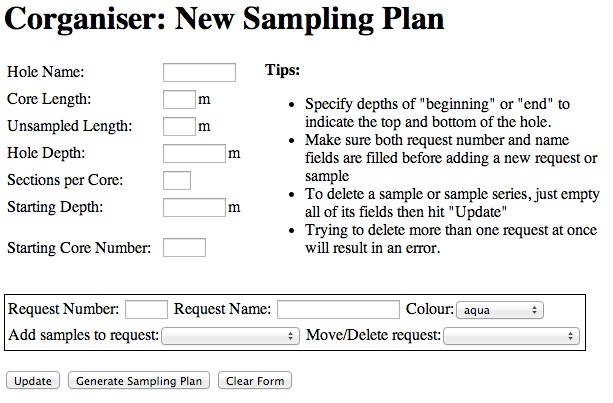
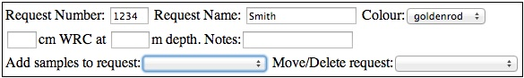
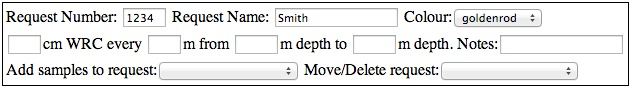

In a typical scientific drilling expedition, such as carried out by the International Ocean Discovery Program (IODP), cores are brought on board the drilling vessel and cut into sections. For analyses that require immediate treatment of the sediment, such as microbiological analyses, these sections are either sub-sampled by syringes or cut into whole-round cores (short core sections usually around 5-10 cm long). Samples are then stored in a way that preserves ephemeral properties, for example by freezing or storing anaerobically at 4ºC. In order to process samples swiftly, most of the planning for which samples should be taken from which depths needs to occur before drilling commences. With many different sample requesters requesting different kinds of samples at different depth intervals, this planning process can become complicated.
Corganiser is a software tool that aids in the development of such shipboard sampling plans. Corganiser generates PDF-formatted colour-coded diagrams showing how whole rounds should be cut from core sections, labeled, and preserved. Compared to manually producing such diagrams corganiser saves time, which can be particularly helpful for last-minute modifications to sampling plans based on geochemical data collected at a site. In its most user-friendly incarnation, Corganiser is a web-based service that can run from any internet-connected computer or tablet. For more advanced users, Corganiser is also available as a Python script that can be installed on any computer running Python 2.x with the ReportLab package. Running Corganiser on your own computer might be good idea if you will have no/slow/intermittent internet access, such as offshore or in a remote land-based location. The figure below provides an overview of how Corganiser is structured with the various routes one could take from the web-based sampling plan input to a hard copy of a finished sampling plan:
Corganiser was developed during IODP Expedition 347 in the Baltic Sea by microbiologist Ian Marshall with input from ESO staff and the rest of the scientific party. If you have any questions, issues, feedback, or suggestions, please email Ian (ianpgm at biology dot au dot dk).
Web-based corganiser home page is accessible from http://corganiser.au.dk. All functions are accessible from the home page. To see an example of a filled out form, click on "Try out an example sampling plan"
From the home page, click on "Make a new sampling plan". This leads to a blank sampling plan input form:
Start by filling in the information about the entire hole. The Hole Name cannot contain spaces. The Core Length refers to the length of core accessible to sampling, while the Unsampled Length refers to the extra length in each coring run that contributes to the total depth of the hole without being accessible to sampling (e.g. the core catcher). The Hole Depth must be a multiple of the sum of the Core Length and the Unsampled Length. For example, for a Core Length of 3 m and an Unsampled Length of 0.3 m the total hole depth must equal N*3.3, where N is an integer (9.9 m would be permitted, 10 m would not be permitted). The sections per core refers to the number of sections the core is cut into when first brought on deck, exposing areas that can be cut into for whole round sampling. The Starting Depth is the shallowest depth (metres below seafloor) where sampling begins, and the Starting Core Number is the number given to the first core - subsequent cores will be counted from here. If any of the core-specific parameters (such as Core Length, Unsampled Length, or Sections per Core) are expected to change within a single hole, then multiple sampling plans must be prepared for the hole.
A sample request typically refers to a request by an individual researcher for samples. There can be multiple different kinds of samples within a given request (i.e. different depth intervals, storage condition notes). All samples within the same request will be given the same colour code on the final PDF output. To add a new sample request just type in the Request Number (typically corresponding to the formal 4-digit IODP request number, but this could also be a word rather than a number), the Request Name (typically responding to the name of the requesting researcher), and the Colour (the colour coding that will be used on the final PDF output). Once the Request Number and Request Name are added to the first request, a new blank request form can be generated by hitting the Update button. The order in which requests are included in the form will determine the order that they appear in the core sampling plan, with the first request at the edge of the section and each subsequent request taken inwards towards the core's middle region. To re-arrange the order of requests, use the Move/Delete request: drop-down menu in the bottom-right hand corner of the request box and select "move request up" or "move request down". This drop-down menu can also be used to delete a request. For extra space at a section's edge for syringe sampling or contamination avoidance you can add extra "dummy" requests.
The drop-down box in each request labeled Add samples to request: reveals that there are two ways of adding samples to a request: either by specifying a single sample at a single depth (option: "new one-off sample") or by specifying how often a sample should be taken within a given depth interval (option: "new sample series"). The former will be most useful for requesters that request specific but irregular depths, the latter will be most useful for requesters making requests like "10cm whole-round core every 3m."
To make a new one-off sample, select "new one-off sample" from the drop-down menu. The following fields will appear:

Enter the length of the whole-round core (WRC) in centimetres and the target depth for the placement of the sample in metres. Corganiser will not place the sample at the precise depth that you indicate, but rather at the closest appropriate section interface where it can be cut away. Under Notes: you should include information necessary for processing the samples, such as "frozen -80C", "anoxic 4C", or "subsampling" etc. Certain characters are not allowed under the notes field, unfortunately including the degree symbol 'º'.
To make a new sample series, select "new sample series" from the drop-down menu. The following fields will appear:

Enter the length of the whole-round core (WRC) in centimetres, the interval at which the sample repeats for "every X m" and the depths to start (Y) and stop (Z) that series for "from Y m to Z m." Note that for simplicity's sake the repeating interval does not take into account the "unsampled length". So for one sample every core with 9-m cores and 0.3-m unsampled length, you should enter "every 9 m" rather than "every 9.3 m". If the 9-m core with 0.3-m unsampled length is cut into 6 1.5-m sections and you would like a sample every section, you should enter "every 1.5 m". The Notes: field should be used in the same way as for one-off samples.
Once you've finished your sampling plan, you can produce the colour PDF output and the corganiser (.cor) file by clicking the Generate Sampling Plan button at the base of the page. This will lead to a page with a header saying "Generating corganiser (.cor) file and resulting PDF..." followed by text output for each sample placed, core rendered etc. You can generally ignore the text output, but if Corganiser is not working and you need to do some troubleshooting you should copy and paste that text and include it in the email when you write your question or feedback. Once you scroll down to the bottom of the page you will find the link to your PDF sampling plan - if you need to tweak this beyond what Corganiser is capable of you could use any program that edits PDFs (like Adobe Illustrator). Check your PDF output carefully - if you have too many samples in there (i.e. if you're trying to sample more sediment than you're coring) then the samples might start appearing on top of each other, in which case you should probably revise your input or fix the file manually in Illustrator.
The second output file that Corganiser produces is your "COR" file - this is a text file with a '.cor' extension that contains all the information you entered into the web form to produce your sampling plan. You can download this and either (a) re-upload it to the Corganser web service later so you can edit your sampling plan or (b) edit it manually in a text editor on your own computer and run it through the command-line version of Corganiser if you don't have internet access.
If you want to edit the sampling plan you just produced, you can click on Reload this sampling plan for editing and you will be taken back to the filled-out web form.
Go to the Corganiser home page and, under Upload and work with an existing sampling plan .cor file:, click Choose File. Then navigate to the folder on your local computer where you saved the .cor file, select the .cor file, and click Open. The file name will appear next to the Choose File button. Then click Submit. This should take you to the standard "New Sampling Plan" form, but with the form filled in with your previous sampling plan. You can now edit this sampling plan and generate a new PDF and .cor file just as described above for a new sampling plan.
Corganiser should work on any computer running Python 2.7 and ReportLab 2.7 - this includes GNU/Linux, Mac OS X, and Windows.
Make sure that Python 2.7 is installed on the computer you would like to run Corganiser on. It will probably be installed already on most linux installations, users of Mac OS X and Windows may need to install it separately.
First install ReportLab, a tool for rendering graphics in PDF format from Python. To do this, download the source and follow the instructions on their reportlab bitbucket page.
The Corganiser python script and an example input file are included in a gzipped tar file linked from the homepage (or click here to download it). Once you unzip this file you should be able to run the example file using the following command:
python corganiser_universal_3.py example_sampling_plan.cor
This will generate the file
example_sampling_plan.cor.pdfin the directory where it was run, which should be the same as running the example on the website.
Check the .cor file example to see the ".cor" file format. The file format used as input by Corganiser to make sampling plans is a text file with two sections: a header (describing the hole) and a sample request section (describing each sample request). The header takes the following form:
hole_name = "Example" core_length = 3 unsampled_length = 0.3 hole_depth = 89.1 sections_per_core = 2 starting_depth = 0 starting_core = 1All depths and lengths are metres, and the same rules apply here as do the rules for the web-based version.
Following the header section, requests and samples are added in the following way:
Begin Requests: request 1830: "Torti" : "salmon" "10cm WRC -> subsampling" every 1.5 from beginning to 9.9 "10cm WRC -> subsampling" every 3 from 9.9 to 33 "10cm WRC -> subsampling" every 9 from 33 to 42.9 "10cm WRC -> subsampling" every 1.5 from 42.9 to 66 "10cm WRC -> subsampling" every 9 from 66 to end request 1955: "Lloyd" : "yellow" "5cm WRC-> -80C" at 1.5 "5cm WRC-> -80C" every 6 from 3.3 to end request 9999: "Interstitial Water" : "turquoise" "10cm WRC -> IW" every 1.5 from beginning to 23.1 "10cm WRC -> 1909/1870/2013 subsampling" every 1.5 from beginning to 23.1 "10cm WRC -> IW" every 3 from 23.1 to end "10cm WRC -> 1909/1870/2013 subsampling" every 3 from 23.1 to endThe header ends and the request section begins with the "Begin Requests:" line. A new request is declared by the word "request" on a new line, followed by a space and the request number, followed by a colon and the request name in quotation marks, followed by another colon and the colour of the request in quotation marks. A list of allowable colour names can be found here. Every line following a new declared request is considered a new one-off sample or sample series.
A one-off is structured as
"Xcm WRC -> Notes" at Ywhere X is the length of the whole-round in centimetres, Notes are the text notes to appear next to each sample, and Y is the target depth of the sample A series is structured as
"Xcm WRC -> Notes" every Y from A to Bwhere X is the length of the whole-round in centimetres, Notes are the text notes to appear next to each sample, Y is the metre distance between samples (discounting the unsampled length) and A and B are the upper and lower depths of the series in metres.
Save the .cor file as a regular text file (the .cor file extension isn't actually necessary, just a handy way of keeping track of things) and it's ready for turning into a PDF either locally using corganiser_universal_3.py or using the web service.
Running Corganiser from the command line is simple - the only parameter is the input file. Just put the input .cor file in the same folder as the script and type
python corganiser_universal_3.py filename.corand it will generate the PDF file
filename.cor.pdfthat can be printed or edited further.
For every sample to be positioned in the sampling plan, the following steps are taken: